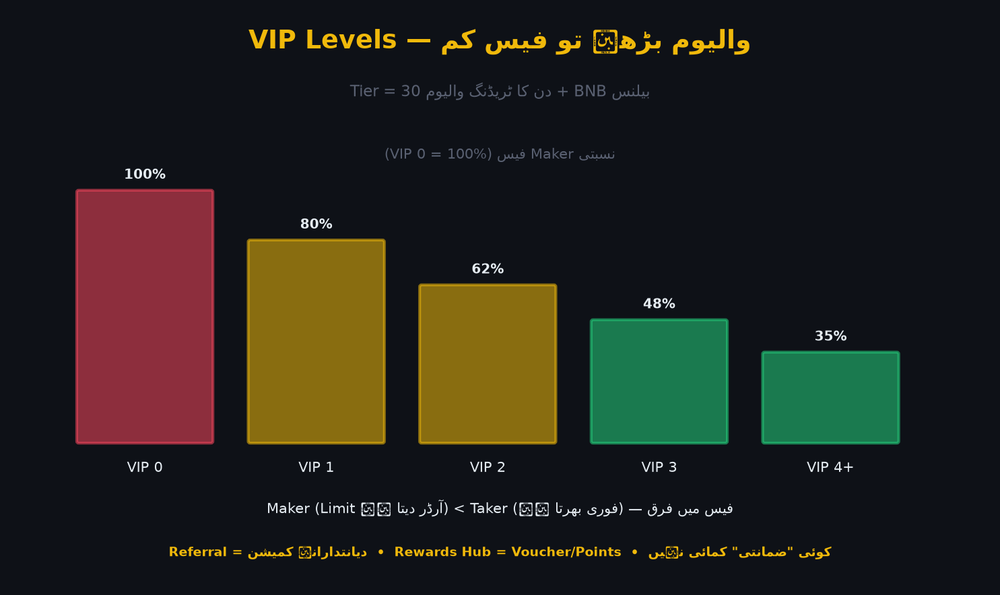

بائننس کے Referral اور Rewards پروگرام آپ کو بائننس کو دوسروں تک پہنچانے اور ادائیگیوں/کاموں کے بدلے انعام دیتے ہیں۔ ساتھ ہی VIP Levels آپ کی ٹریڈنگ فیس پر براہِ راست اثر ڈالتے ہیں — اگر آپ کا والیوم بڑھے تو فیس کم ہوتی ہے۔ یہ باب ان تینوں کو سمجھاتا ہے اور بتاتا ہے کہ کمائی سے زیادہ فیس/انعامات کا اصل حساب کیسے کریں۔

تصویر 60.1: Fee Tier/VIP Levels کا خاکہ — 30 دن کا ٹریڈنگ والیوم + BNB بیلنس جتنے زیادہ، Maker/Taker فیس اتنی کم۔
🎯 اس باب میں آپ سیکھیں گے
Referral پروگرام کیسے کام کرتا ہے
Referral کمی کیسے حاصل ہوتی ہے اور اس کی حد
Rewards Hub اور Binance Missions/Quests
VIP Levels کا نظام: Volume + BNB بیلنس
Maker/Taker فیس کا فرق
Fake Referral/"کماؤ" دھوکے سے کیسے بچیں
📖 60.1 Referral پروگرام
آپ (Referrer) → اپنا Referral لنک/کوڈ شیئر کریں
دوست (Referee) → آپ کے لنک سے رجسٹر کریں
↓
دونوں کو فائدہ: کچھ فیصد فیس میں رعایت/کمیشن
آپ کو: فیس کا ایک فیصد (کمیشن) ان کے ٹریڈز پر
دوست کو: فیس میں رعایت (اکاؤنٹ بناتے وقت لنک سے)
سطح (Tier) اور مدت پروگرام کے مطابق بدلتی ہے
اصول: Referral سے "کمائی" اسی وقت معنی رکھتی ہے جب یہ دیانتدارانہ ہو۔ جھوٹے وعدے/گلے سے نقصان دہ ساکھ بنتی ہے۔
تنبیہ: Reward کسی "بڑی رقم" کی توقع مت بنائیں — عام طور پر چھوٹے Voucher ہوتے ہیں، مگر مکمل KYC کے ساتھ۔
📖 60.3 VIP Levels — فیس اصل میں کیسے کم ہوتی ہے
VIP Tier کا تعین عام طور پر دو عوامل سے:
30 دن کا ٹریڈنگ والیوم (Spot + Futures)
BNB بیلنس (Spot + بعض Earn)
VIP 0 → سب سے زیادہ فیس
VIP 1…N → والیوم/BNB کے ساتھ فیس کم ہوتی ہے
سب سے اوپر → سب سے کم فیس
Maker بمقابلہ Taker
Maker: آرڈر بک میں Order لگاتا ہے (لیکویڈیٹی دیتا ہے) → کم فیس
Taker: موجود آرڈر پر فوراً بھرتا ہے → زیادہ فیس
حکمت: بڑے ٹریڈرز Limit آرڈر (Maker)کے ذریعے سالانہ کافی رقم بچا لیتے ہیں۔
📖 60.4 حساب کی مثال
مہینے میں $100 Spot ٹریڈ فیس (VIP 0)
اگر VIP Level سیٹنگ سے فیس 40% کم:
بچت = $40 مہینہ = $480 سالانہ
اگر BNB فیس ڈسکاؤنٹ بھی آن:
مزید کم ہو جائے گی
📖 60.5 دھوکے سے بچاؤ
❌ "Referral سے لاکھوں کماؤ" والے دعوے
❌ Unregistered فیس/کھلاڑیوں والی "Signals" خدمات — جان بوجھ کر لنک/فارم
❌ ایسے Key نکلیں کہ آپ Referral Convert کو "Hack" کریں — جھوٹا
❌ DM میں "Idle Investment" کے بہانے Referral لنک
✅ صرف ایپ/سائٹ کے Profile → Referral سے لنک بنائیں
✅ شرائط براہِ راست Binance Help Center پر پڑھیں
✅ "ضمانتی منافع" والا کوئی بھی نہیں — نہ Referral، نہ پائے
⚠️ عام غلطیاں
❌ Referral کمیشن کو فوری آمدنی سمجھنا — شرائط اور ٹریڈنگ پر منحصر۔
❌ پرانا/غلط Referral کوڈ شیئر کرنا۔
❌ جھوٹے وعدوں والی تشہیر — اکاؤنٹ کی ساکھ ضائع۔
❌ VIP Level کا حساب نہ کرنا — سالانہ اخراجات زیادہ۔
❌ Maker/Taker فرق نظر انداز کرنا۔
❌ "Fake Referral Hack" جیسے غیر اخلاقی دعوے آزمائیں۔
❌ Rewards کے لیے ناقابل اعتماد لنک پر کلک کرنا۔
✅ خلاصہ
Referral = دونوں کو فیس میں فائدہ/کمیشن؛ دیانتداری لازمی۔
Rewards Hub = Voucher/Points؛ مکمل KYC کے بعد۔
VIP Levels = Volume + BNB بیلنس سے فیس کم۔
Maker (500 سے کم) بمقابلہ Taker (فوری) فیس میں فرق۔
ہر "ضمانتی کمائی" کا دعوہ جھوٹا — دھوکے سے بچیں۔
📝 عملی مشق
Profile → Referral میں اپنا کوڈ/لنک دیکھیں۔
Referral کے فیصد/شرائط Help Center پر تلاش کریں اور لکھیں۔
Fee Tier صفحہ کھول کر اپنا موجودہ VIP اور اگلا Tier دیکھیں۔
فرضی $500 ماہانہ فیس پر 40% رعایت سے سالانہ بچت حساب کریں۔
5 "جھوٹی کمائی" علامات لکھیں جو آپ کبھی نہ کریں گے۔
🧠 یاد رکھیں
"Referral سچائی سے چلتا ہے؛ VIP فیس کی ریاضی ہے — کمائی سے زیادہ بچت اہم۔" اصول: (1) صرف ایپ سے لنک/کوڈ، (2) Maker آرڈر سے فیس کم، (3) کوئی "ضمانتی" کمائی نہیں۔